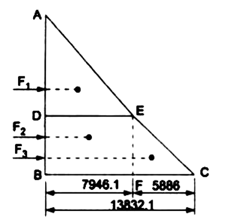

Q.8 A cubical tank has sides of 1.5 m. It contains water for the lower 0.6 m depth. The upper remaining part is filled with oil of specific gravity 0.9. Calculate for one vertical side of the tank :
(a) total pressure, and (b) position of centre of pressure.
Answer :
Given : Cubical tank of sides 1.5 m means the dimensions of the tank are 1.5 mx 1.5 mx 1.5 m.
Depth of water = 0.6 m
Depth of liquid = 1.5 - 0.6 = 0.9 m
Sp. gr. of liquid = 0.9
Density of liquid, Pi = 0.9 x 1000 = 900 kg/m3
Density of water, P2 = 1000 kg/m2
(a) Total pressure on one vertical side is calculated by drawing pressure diagram, which is shown in Fig.8-1

Intensity of pressure at A. Pa = 0
Intensity of pressure at D, Pd = P1g x h = 900 x 9.81 x 0.9 = 7946.1 N/m2
Intensity of pressure at B, Pb = P1gh1 + P2gh2 = 900 x 9.81 x 0.9 + 1000 x 9.81 x 0.6
= 7946.1 + 5886 = 13832.1 N/m
Hence in pressure diagram :
DE = 7946,1 N/m2, BC = 13832.1 N/m, FC = 5886 N/m2
The pressure diagram is split into triangle ADE, rectangle BDEF and triangle EFC. The total pressure force consists of the following components:
(i) Force F1 = Area of triangle ADE X Width of tank
= ((1/2) AD X DE) X 1.5 ( Width = 1.5 m)
= ((1/2) 0.9 x 7946.1) X 1.5 N = 5363.6 N
This force will be acting at the C.G. of the triangle ADE, i.e., at a distance of (2/3 ) X 0.9 = 0.6 m below A
(ii) Force F2 = Area of rectangle BDEF x Width of tank
= (BD X DE) X 1.5 = (0.6 x 7946.1) X 1.5 = 7151.5
This force will be acting at the C.G. of the rectangle BDEF i.e., at a distance of 0.9+ (0.6/2)= 1.2 m
below A.
(iii) Force F3 = Area of triangle EFC x Width of tank
= ((1/2) X EF X FC) x 1.5 = ((1/2) X 0.6 X 5886) X 1.5 = 2648.7 N
This force will be acting at the C.G. of the triangle EFC, i.e., at a distance of 0.9 +(2/3) X 0.6 = 1.30 m below A.
Total pressure force on one vertical face of the tank,
F = F1 + F2 + F3
= 5363.6 + 7151.5 + 2648.7 = 15163.8 N.
Ans. (b) Position of centre of pressure
Let the total force F is acting at a depth of h from the free surface of liquid, i.e., from A.
Taking the moments of all forces about A, we get
F x h = F1 x 0.6 + F2 X 1.2 + F3 x 1.3
or h = (F1 X 0.6 + F2 x 1.2 + F3 X1.3) / F
= ( 5363.6 x 0.6 + 7151.5 X 1.2 +26487 x 1.3 ) / 15163.8
= 1.005 m from A. Ans.